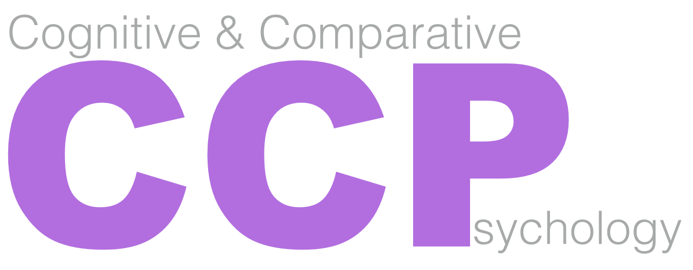

The Cognitive and Comparative Psychology training area at CUNY is chiefly concerned with the study of cognitive and behavioral processes across the animal kingdom. Our basic belief is that a more complete understanding of psychological processes can often be achieved by considering such processes within an evolutionary context. In some cases, those processes will be highly specialized and in other cases they will be quite general, and we welcome analyses of the diversity of psychological processes by studying cognition and behavior at multiple levels of investigation with humans as well as with other animals.
Students and faculty in the CCP training area conduct research to understand the functions and mechanisms of cognition and behavior in human and non-human animals. We work on perception, memory, attention, creativity, concepts, learning, decision-making, language acquisition and processing, and communication across species. We take an integrative approach that combines cognitive, evolutionary, ecological, and comparative frameworks to answer fundamental questions about the proximate and ultimate causes of cognition and behavior. We use a variety of methods – observations, experiments in the field and the laboratory, neuroscience, and computational modelling. We prepare students for careers in academia (research and teaching), as well as in health, education, business, and industrial settings.
For more information please contact:
Professor Andrew Delamater, PhD
CCP Training Area Head
ph: 718 951-5000 x6026
